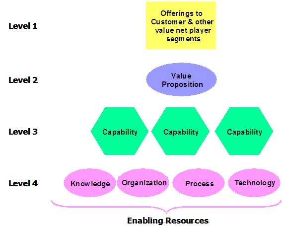
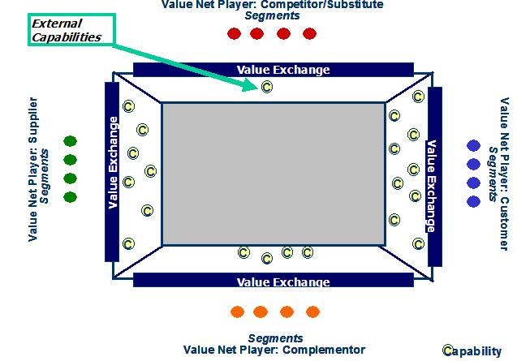
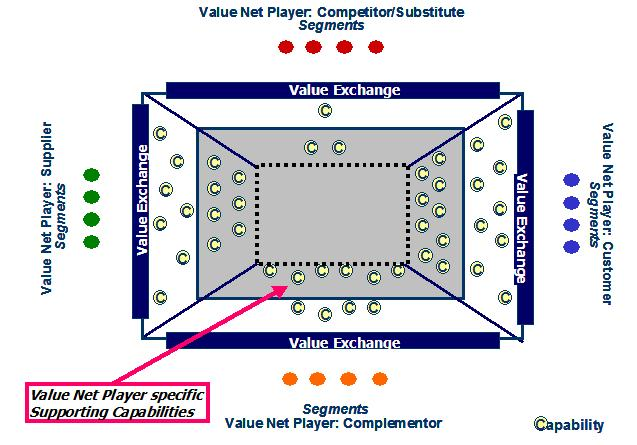
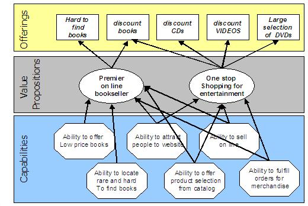
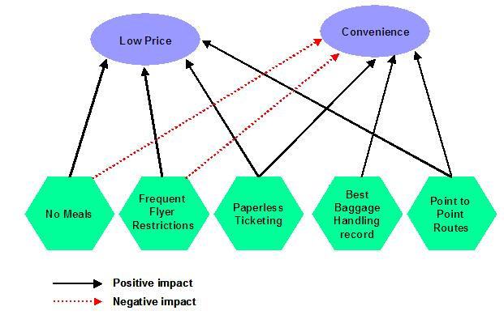
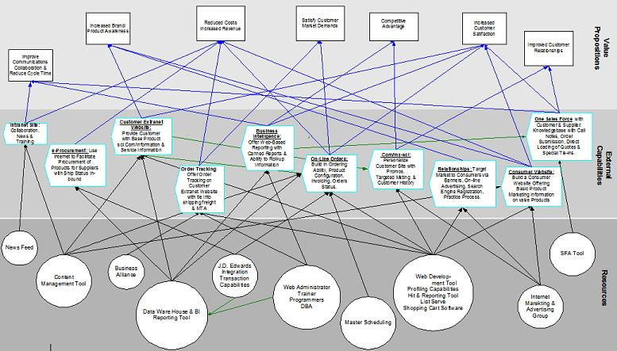
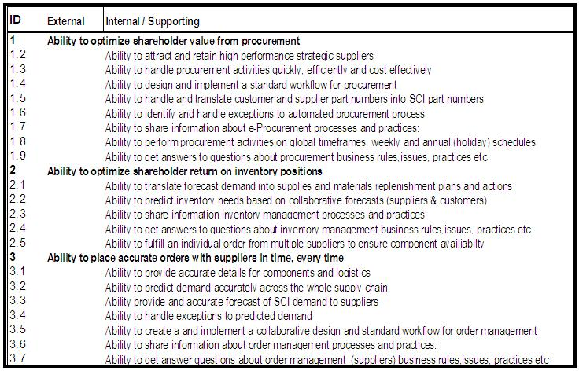
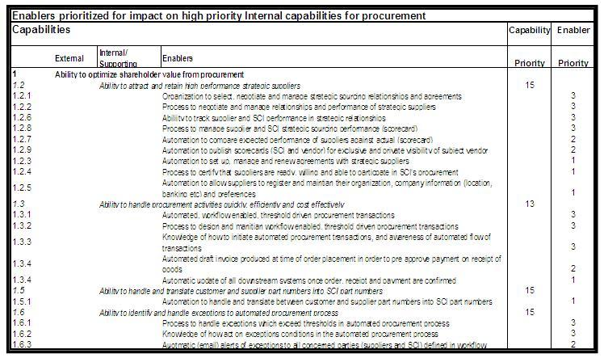

| Artifact: Capability Model Definition (BUS 416) |
 |
|
This work product provides the analytical framework for an enterprise, line of business (LOB) or group of LOBs. This framework enables the consulting team to:
The Capability Model Definition work product should enable the client to have clear answers to the following set of questions:
|
| Parent Deliverables | ||
|---|---|---|
| Main Description | The Capability Model Definition work product depicts an integrated framework of a firm’s capabilities. This integrated framework shows how, and to what extent, these capabilities interact with and affect one another, in serving the value exchanges (where a product or service is exchanged for something of value) between the firm and its customers and other external value net players (Partners, Suppliers, Channels, etc.). The framework also shows the degree to which capabilities positively reinforce one another, or negatively impede one another, and the direction of cause and effect between related capabilities. In its most detailed form, this integrated framework shows how enablers combine to serve one or more capabilities. The Capability Model Definition represents those critical things that a firm must be capable of doing well to insure the performance of its business design. At its most detailed, the Capability Model Definition work product will describe a framework comprising four layers:  The Capability Model Definition work product distinguishes between three types of capability, namely external capabilities, supporting capabilities, and common capabilities.


The Capability Model Definition work product can be used to depict the ‘As Is’ state, but is more typically developed for the ‘To Be’ state. A completed Capability Model Definition work product can be used to depict the capabilities for a complete enterprise, or an individual Line of Business (LOB). |
|---|---|
| Notation | At the highest level, the Capability Model Definition work product would include a Strategic Capability Network (SCN) diagram to show how capabilities support the value propositions of the firm’s offerings. 
 In many cases, the breadth of focal area of an engagement, causes the SCN diagram to become too confusing to support the level of analysis required for correlating and optimizing capabilities, and should be augmented with a capability matrix.
 One dimension of Capability Model Definition uses a spreadsheet to show the external capabilities and their supporting internal capabilities.
 
When the relationship of capabilities is not hierarchical (one-to-many), but is many-to-many, then it is useful to show
those relationships using an association matrix. In the matrix below, the information in the cells can show both
positive (supporting) and negative (inhibiting) relationships. |
| Examples |
|---|
Scope of Analysis Capability Model Definition provides a valuable tool for decision making from its highest level, depicting how capabilities support value propositions and offerings, to its lowest level of a fully prioritized, linked and correlated set of capabilities and enablers required to support a business design. The challenge for the project/engagement manager, is to decide where to set the scope and boundaries for analysis at each phase of the engagement. The following provides a rough guide for determining how detailed a work product will be produced: Strategy: The work product includes the capabilities identified and correlated for strategic opportunities, in support of a given business design for profitability and sustained advantage. Design: The work product includes prioritized capabilities and enablers for the purpose of design optimization, investment and resource allocation and release planning to deliver the initiatives in the strategic roadmap. Business Design Context Sensitivity The Capability Model Definition is relevant in the context of a set of value exchanges positioned in an external environment. As market segment sizes change, buyer preferences shift, the value a firm can derive from a particular offering can change dramatically. Capabilities which have led to sustainable advantage in the past, may not do so in the future because of their relevance to external forces. The Capability Model Definition work product forms a basis for the continuous assessment of these external dynamics on internal workings, and provides the means to avoid a failure of the firm’s business design.
|
| Impact of not having | The client will make decisions based on an incomplete understanding of external capabilities, or their dependency on supporting and common capabilities. This leads to under investment and unrealized value propositions. The client may be ignorant of the degree to which some capabilities have a negative impact on their business value propositions. Over time, as the external environment changes, this could cause a failure of the business design. |
|---|---|
| Reasons for not needing | This work product will be required whenever capabilities are being considered for development, enhancement, modification, or retirement. The key question for project managers is not so much whether to include the work product, but the degree to which the Capability Model Definition will be elaborated. |
| Guidelines | |
|---|---|
| Supporting Materials | |
| Estimation Considerations |
| © Copyright IBM Corp. 1987, 2012 All Rights Reserved Property of IBM These materials are intended only for use as part of an IBM engagement |